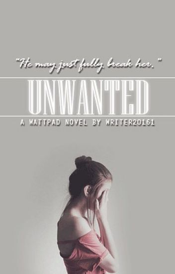
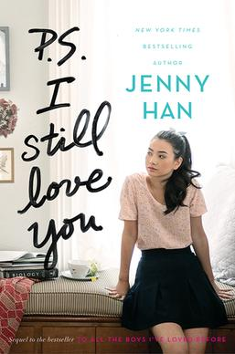
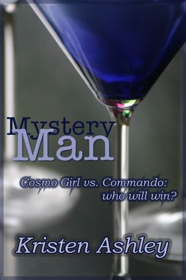
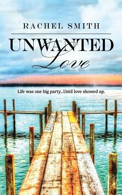
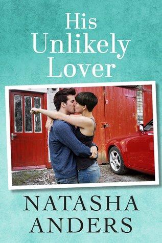

- UNWANTED

"Please...don't do this." I whimpered as he took a step closer.
He narrowed his black eyes, "Sorry not sorry." he sneered.
I closed my eyes, praying this would be over soon.
***********************
Celina Blood, she's shy, sweet, caring, but she's also stubborn and strong. She's a fun she-wolf who is hiding a terrible past.
Hades Black, the arrogant Alpha who is disgusted by rogues. He's cruel and heartless, something his mate learns quickly. Along with something else that may just fully break her.
- I STILL LOVE YOU

. I Still Love You is a 2015 young adult romance novel by American author Jenny Han, first published by Simon & Schuster and released on May 26, 2015. It is the sequel to the novel To All the Boys I've Loved Before, released on April 15, 2014,[1] and was followed by a third installment, Always and Forever, Lara Jean, released on May 2, 2017.[2]
A film adaptation of the book titled To All the Boys: P.S. I Still Love You was released on February 12, 2020 on Netflix. It is a direct sequel to To All the Boys I've Loved Before.
- MYSTERY MAN DREAM

Night time is the right time...
Gwendolyn Kidd has met the man of her dreams. He's hot, he's sexy, and what started as a no-names-exchanged night of passion has blossomed into a year and a half-long pleasure fest. Sure, it's a little strange that he only appears in her bed at night, but Gwen is so sure he's the one, she just can't turn him away...
- LOVE UNWANTED

I’m wild.
I’m reckless.
I’m Kat Willis - the ultimate party girl.
My goal in life? To have a good time, a feat I seem to accomplish with ease.
I’ve lived a privileged life in picturesque Crystal Lake. On the outside, I have it all. Money, good looks, and any guy I want.
Until he came along….Jaxson McAllister. Insanely sexy with a killer smile, I never stood a chance. He saw a
- HIS UNLIKELY LOVER

Bobbi Richmond has always been in love with her best friend, Gabe Braddock, even if Gabe, who works for her media mogul father, has always treated Bobbi like a kid sister, calling her “Runt.”
After a tipsy Bobbi kisses Gabe at a party, Gabe is surprised to find “Runt” becoming the object of his fantasies, and Bobbi is shocked to find her advances suddenly reciprocated. When